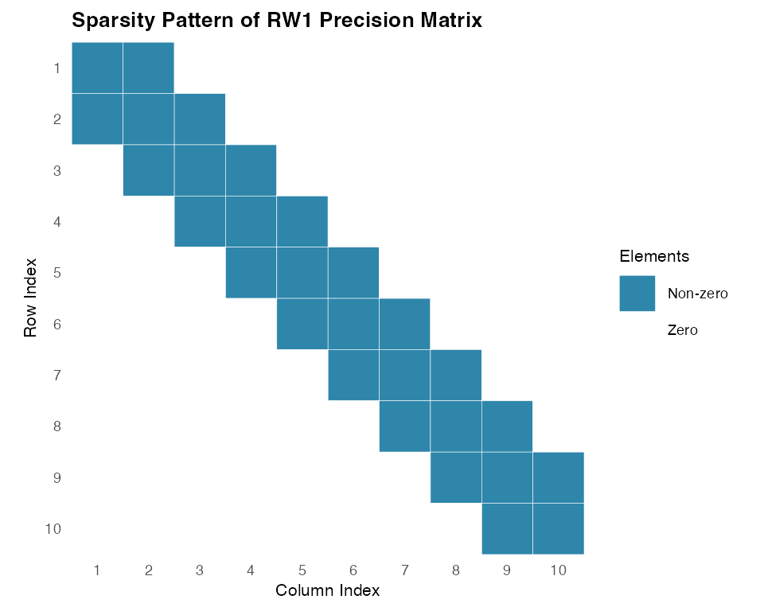
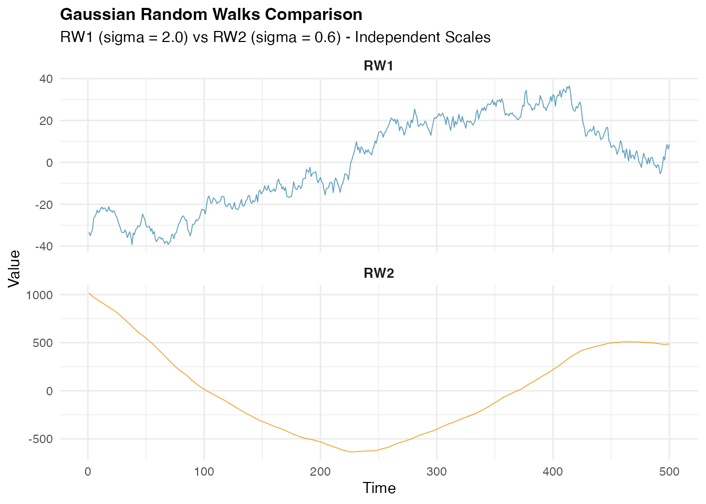
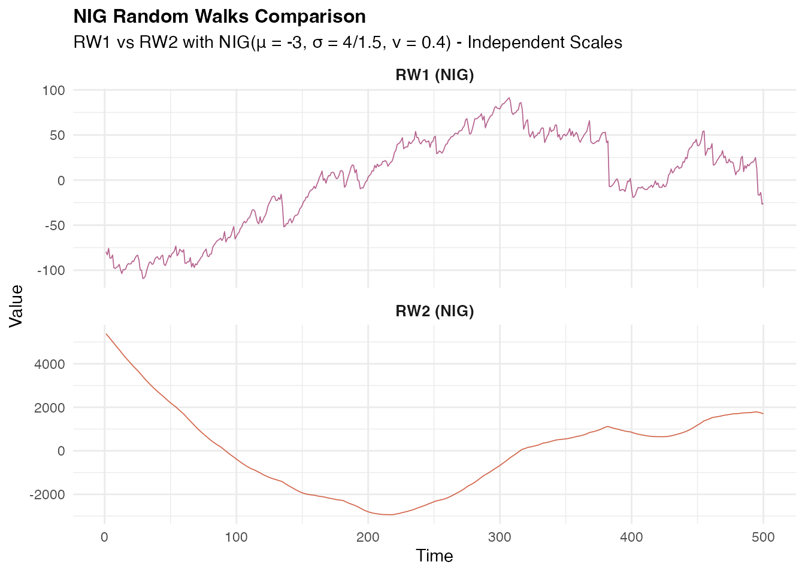
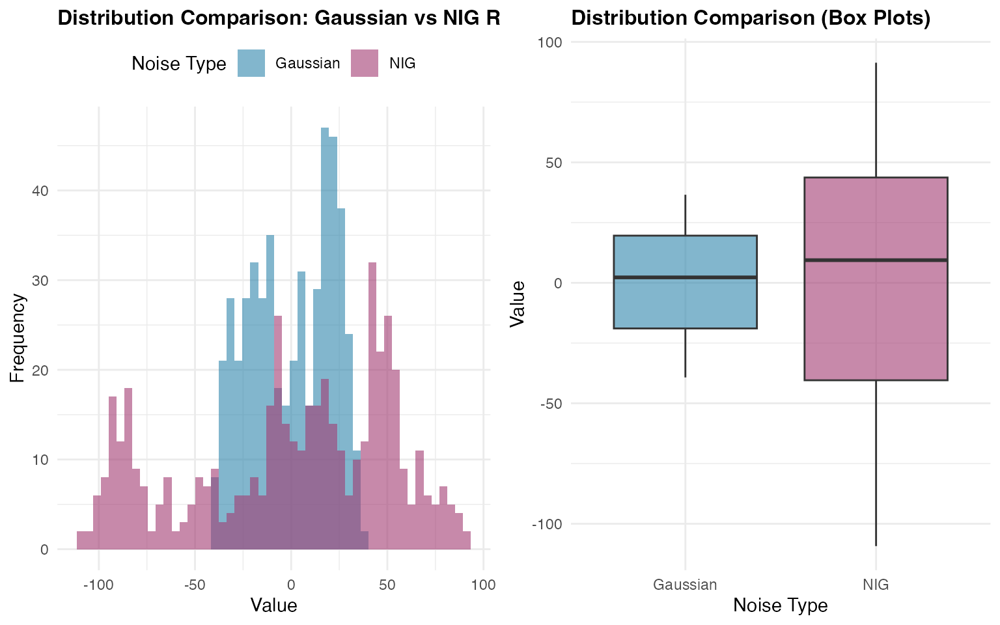
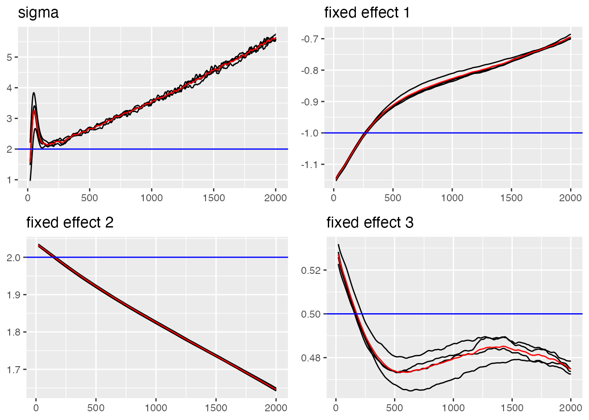
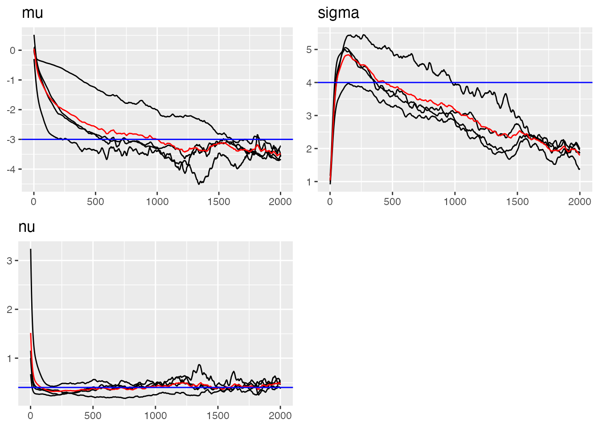
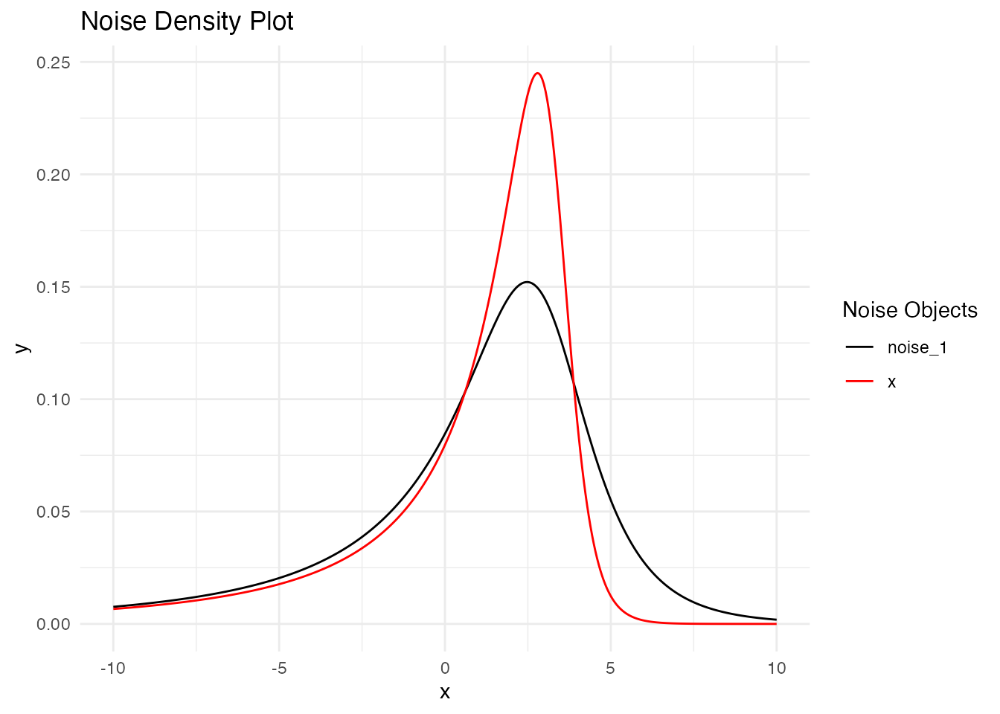
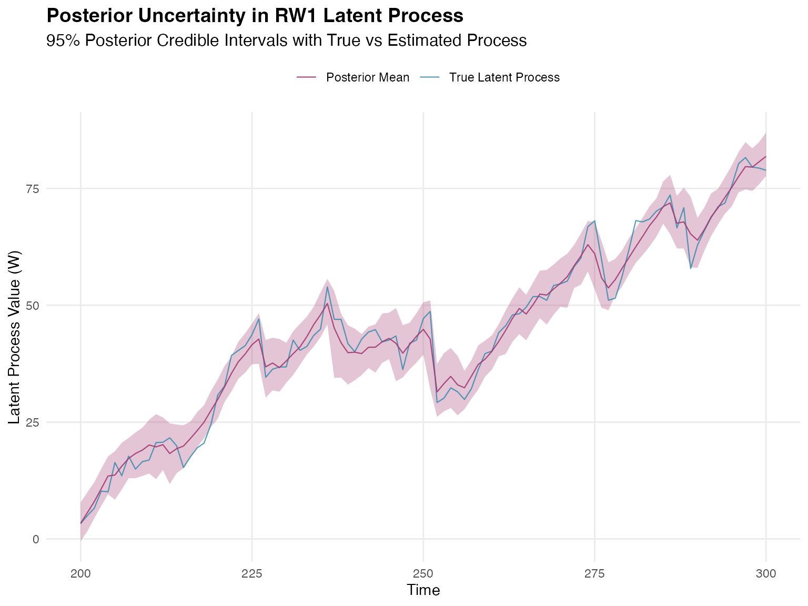
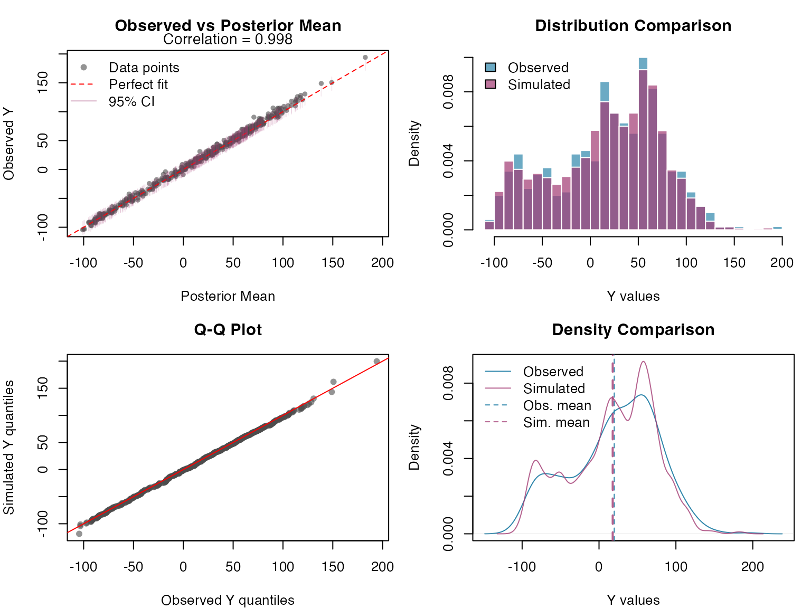
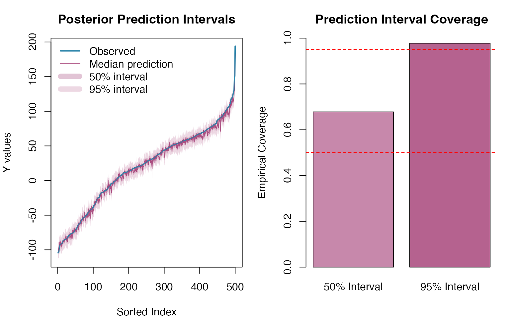

Introduction
Random walk models are fundamental stochastic processes widely used in time series analysis, spatial statistics, and Bayesian smoothing applications. They provide a flexible framework for modeling data where consecutive observations are correlated and the underlying trend varies smoothly over time or space.
The random walk models in ngme2 extend
traditional implementations by allowing for non-Gaussian noise,
particularly the Normal Inverse Gaussian (NIG) and Generalized
Asymmetric Laplace (GAL) distributions. This flexibility enables
modeling of data with asymmetric behavior, heavy tails, and complex
dependence structures commonly observed in real-world applications.
This vignette provides a comprehensive guide to implementing and
using random walk models within the ngme2 framework,
covering both first-order (RW1) and second-order (RW2) specifications,
along with their cyclic variants and different constraint
approaches.
Model Specification
Random Walk Process Definition
Random walk models belong to the class of intrinsic Gaussian
Markov random fields (GMRFs), defined by
finite-difference operators rather than explicit
covariance functions. The unified framework in ngme2
represents all latent models as:
where is the operator matrix that defines the model structure, is the latent process vector, and represents the innovation terms.
First-Order Random Walk (RW1)
The first-order random walk models the increments between consecutive observations as independent innovations. For a sequence of locations , the RW1 process is defined as:
where are independent innovations with variance , and represents the mesh weights (spacing between consecutive locations).
Key characteristics:
- Moderate smoothness: Provides piecewise-linear behavior
- Mesh weight scaling: Innovation variance adapts to local spacing
- Irregular grid support: Handles both regular and irregular spatial or temporal grids
Second-Order Random Walk (RW2)
The second-order random walk models the second-order differences (curvature) as independent innovations. Assuming a regular grid, we have the following dynamics:
where are independent innovations with variance , where is the (constant) distance between consecutive locations.
Key characteristics:
- Enhanced smoothness: Provides smoother trajectories than RW1, ideal for curve fitting
- Curvature control: Models second-order differences for controlled smoothness
- Minimum requirement: Needs at least 3 locations due to second-order structure
Properties
Intrinsic Nature: Random walk models are intrinsic processes defined by their difference structure rather than explicit covariance functions. This leads to:
- Rank-deficient precision matrices for non-cyclic models
- Invariance under polynomial trends (constants for RW1, linear trends for RW2)
- Need for constraints to achieve proper identification
Smoothness and Dependencies:
- RW1: Moderate smoothness with local linear behavior
- RW2: High smoothness with controlled curvature
- Markov property: Local dependence leads to sparse precision matrices
- Boundary conditions: Open (free endpoints) or cyclic (periodic)
Noise Distributions: Innovation terms can follow:
- Gaussian: Traditional symmetric, light-tailed errors
- Normal Inverse Gaussian (NIG): Flexible distribution with skewness and heavy tails
- Generalized Asymmetric Laplace (GAL): Accommodates peakedness and asymmetry
Mesh Weights and Irregular Grids
The mesh weight system
enables ngme2 to handle both regular and irregular grids
for the RW1 model:
For regular grids (equally spaced): (constant), giving standard random walk behavior.
For irregular grids (varying spacing): reflects local spacing, with innovation variance adapting to local density.
Mathematical consequences for RW1:
- Scale invariance: Proper scaling across different sampling densities
- Local adaptation: Model responds to irregular sampling patterns
- Computational stability: Preserves numerical properties across grid types
Note: The RW2 model in this vignette is demonstrated with regular grids only.
Matrix Representation
The random walk process can be expressed in matrix form as .
Precision Matrix
For random walk processes with operator matrix and mesh weights , the precision matrix is:
where contains the scaled mesh weights.
For equally spaced locations (), this simplifies to: .
Important properties:
- RW1: Tri-diagonal precision matrix (sparse structure)
- RW2: Penta-diagonal precision matrix (sparse structure)
- Rank deficiency: Non-cyclic models have singular precision matrices
- Mesh adaptation: Automatic adjustment to irregular grids (for RW1)
Matrix Relationships Summary
- Operator matrix : Maps correlated random walk process to independent innovations
-
Precision matrix:
for unconstrained models. For constrained models,
is derived from the augmented matrix
that includes constraint rows
- Sparsity: Tri-diagonal (RW1) or penta-diagonal (RW2) structure enables efficient computation
- Mesh adaptation: Automatic handling of irregular grids through matrix (for RW1)
This matrix formulation provides computational advantages through
sparse operations while maintaining flexibility for irregular sampling
patterns in RW1 models and integrates seamlessly with other
ngme2 components.
Implementation in ngme2
Basic Syntax
To specify a random walk model in ngme2, use the
f() function with the model="rw1" or
model="rw2" argument within your model formula. When not
specifying the noise argument in f(), the
process defaults to Gaussian noise. For simulation purposes, it is
important to define the sigma parameter in the
noise specification, as this controls the variance of the
innovations. For estimation, however, specifying sigma is
optional since the model will automatically estimate this parameter from
the observed data.
Basic Usage Example
The ngme2 package provides flexible random walk
implementations that accommodate both regular and irregular observation
grids for RW1 models. This flexibility is essential for real-world
applications where data may have missing observations, irregular
sampling intervals, or complex temporal patterns. RW2 models in this
vignette are demonstrated with regular grids.
Setting Up Random Walk Models
Let’s begin by exploring how to specify different types of random walk models. We’ll work with both small examples for clarity and larger examples to demonstrate computational properties:
library(ngme2)
library(Matrix)
set.seed(16)
# Define different grid configurations
regular_points <- 1:5 # Simple regular grid
irregular_points <- c(1, 3, 7, 10, 15) # Grid with gaps
larger_grid <- 1:15 # Larger grid for matrix demonstrationsNotice that the irregular grid has gaps at positions 2, 4, 5, 6, 8,
9, 11, 12, 13, and 14. The ngme2 package handles these gaps
seamlessly by constructing the appropriate precision matrix structure
internally.
Model Specification with Different Constraints
Random walk models require constraints to handle their intrinsic
nature (rank-deficient precision matrices). Let’s explore the three main
approaches available in ngme2:
# Constrained approach (default): uses sum-to-zero constraint
rw1_constrained <- f(regular_points,
model = rw1(),
noise = noise_normal(sigma = 1.5)
)
# Unconstrained approach: fixes first element as reference point
rw1_unconstrained <- f(regular_points,
model = rw1(constr = FALSE),
noise = noise_normal(sigma = 1.5)
)
# Cyclic approach: treats boundaries as connected (periodic)
rw1_cyclic <- f(regular_points,
model = rw1(cyclic = TRUE),
noise = noise_normal(sigma = 1.5)
)
# Second-order random walk for comparison
rw2_model <- f(regular_points,
model = rw2(),
noise = noise_normal(sigma = 0.8)
)Understanding the Operator Matrix Structure
The different constraint approaches result in different operator matrix structures. Let’s examine how these translate into the mathematical formulation:
# Compare operator matrix dimensions
cat("RW1 constrained K matrix:", dim(rw1_constrained$operator$K), "\n")
#> RW1 constrained K matrix: 5 5
cat("RW1 unconstrained K matrix:", dim(rw1_unconstrained$operator$K), "\n")
#> RW1 unconstrained K matrix: 5 5
cat("RW1 cyclic K matrix:", dim(rw1_cyclic$operator$K), "\n")
#> RW1 cyclic K matrix: 6 6
cat("RW2 constrained K matrix:", dim(rw2_model$operator$K), "\n")
#> RW2 constrained K matrix: 5 5
# Examine the K matrix patterns
print("RW1 Constrained - K matrix structure:")
#> [1] "RW1 Constrained - K matrix structure:"
print(as.matrix(rw1_constrained$operator$K))
#> [,1] [,2] [,3] [,4] [,5]
#> [1,] 0.5 1 1 1 0.5
#> [2,] -1.0 1 0 0 0.0
#> [3,] 0.0 -1 1 0 0.0
#> [4,] 0.0 0 -1 1 0.0
#> [5,] 0.0 0 0 -1 1.0
print("RW1 Unconstrained - K matrix structure:")
#> [1] "RW1 Unconstrained - K matrix structure:"
print(as.matrix(rw1_unconstrained$operator$K))
#> [,1] [,2] [,3] [,4] [,5]
#> [1,] 1 0 0 0 0
#> [2,] -1 1 0 0 0
#> [3,] 0 -1 1 0 0
#> [4,] 0 0 -1 1 0
#> [5,] 0 0 0 -1 1
print("RW1 Cyclic - K matrix structure:")
#> [1] "RW1 Cyclic - K matrix structure:"
print(as.matrix(rw1_cyclic$operator$K))
#> [,1] [,2] [,3] [,4] [,5] [,6]
#> [1,] 0 0.5 1 1 1 0.5
#> [2,] 1 1.0 -1 0 0 0.0
#> [3,] 1 0.0 1 -1 0 0.0
#> [4,] 1 0.0 0 1 -1 0.0
#> [5,] 1 0.0 0 0 1 -1.0
#> [6,] 1 -1.0 0 0 0 1.0Each constraint type creates a distinct pattern:
- Constrained: First row contains sum-to-zero constraint weights, subsequent rows are difference operators
-
Unconstrained: First row fixes the reference point
(W₁ = 0), subsequent rows are standard differences
- Cyclic: Constraint row spans all locations, differences connect endpoints to create periodic structure
Handling Irregular Grids
One of ngme2’s strengths is seamless handling of
irregular observation patterns through internal mapping:
# Create model on irregular grid
rw1_irregular <- f(irregular_points,
model = rw1(),
noise = noise_normal(sigma = 1.0)
)
# Examine the mapping between observed and internal grid
print("User-specified locations:")
#> [1] "User-specified locations:"
print(irregular_points)
#> [1] 1 3 7 10 15
print("Internal mesh locations:")
#> [1] "Internal mesh locations:"
print(rw1_irregular$operator$mesh$loc)
#> [1] 1 3 7 10 15
print("Mapping matrix dimensions:")
#> [1] "Mapping matrix dimensions:"
print(dim(rw1_irregular$A))
#> [1] 5 5The mapping matrix A bridges the gap between the irregular observations and the complete internal grid structure required for the random walk formulation.
Matrix Structure and Computational Efficiency
This matrix formulation provides several computational benefits, particularly in terms of memory efficiency and processing speed. To better demonstrate the sparsity characteristics of random walk models, let’s examine the unconstrained approach which shows the classic tridiagonal structure:
# Load Matrix package for sparse matrix operations
library(Matrix)
# Create unconstrained model to show classic sparse structure
rw1_sparse <- f(1:10, # Use 10 points for clear demonstration
model = rw1(constr = FALSE), # Unconstrained for classic tridiagonal sparsity
noise = noise_normal(sigma = 1.0)
)
# The precision matrix is computed as Q = (K^T K) / sigma^2
sigma2 <- 1.0
Q_matrix <- (t(rw1_sparse$operator$K) %*% rw1_sparse$operator$K) / sigma2
print("RW1 Unconstrained Precision Matrix:")
#> [1] "RW1 Unconstrained Precision Matrix:"
print(Q_matrix)
#> 10 x 10 sparse Matrix of class "dgCMatrix"
#>
#> [1,] 2 -1 . . . . . . . .
#> [2,] -1 2 -1 . . . . . . .
#> [3,] . -1 2 -1 . . . . . .
#> [4,] . . -1 2 -1 . . . . .
#> [5,] . . . -1 2 -1 . . . .
#> [6,] . . . . -1 2 -1 . . .
#> [7,] . . . . . -1 2 -1 . .
#> [8,] . . . . . . -1 2 -1 .
#> [9,] . . . . . . . -1 2 -1
#> [10,] . . . . . . . . -1 1Now let us examine the sparsity pattern of the precision matrix, which is crucial for computational efficiency:

Now let us examine the sparsity pattern of the precision matrix, which is crucial for computational efficiency:
# Check sparsity (important for computational efficiency)
Q_dense <- as.matrix(Q_matrix)
total_elements <- nrow(Q_matrix) * ncol(Q_matrix)
zero_elements <- sum(abs(Q_dense) < 1e-10)
sparsity <- zero_elements / total_elements
print(paste("Sparsity of precision matrix:", round(sparsity * 100, 1), "%"))
#> [1] "Sparsity of precision matrix: 72 %"The unconstrained RW1 model shows clear tridiagonal sparsity structure, with most elements being zero. This sparsity becomes even more pronounced for longer series, making random walk models computationally efficient for large-scale applications.
Finally, let us demonstrate how different error variances affect the precision matrix:
# Demonstrate how different error variances affect the precision matrix
sigma2_values <- c(0.5, 2.0, 4.0)
for (sigma2_test in sigma2_values) {
Q_scaled <- (t(rw1_sparse$operator$K) %*% rw1_sparse$operator$K) / sigma2_test
print(paste(
"With sigma^2 =", sigma2_test,
", Q[1,1] =", round(Q_scaled[1, 1], 3),
"(scaled by factor 1/", sigma2_test, ")"
))
}
#> [1] "With sigma^2 = 0.5 , Q[1,1] = 4 (scaled by factor 1/ 0.5 )"
#> [1] "With sigma^2 = 2 , Q[1,1] = 1 (scaled by factor 1/ 2 )"
#> [1] "With sigma^2 = 4 , Q[1,1] = 0.5 (scaled by factor 1/ 4 )"Key Takeaways:
- Unconstrained models exhibit classic tridiagonal sparse structure ideal for computational efficiency
- Constrained models sacrifice some sparsity for theoretical identifiability properties
- Sparsity increases with series length, making random walk models scalable to large datasets
- The
ngme2package automatically handles sparse matrix operations for all constraint types
The resulting precision matrix
exhibits clear tridiagonal sparsity structure characteristic of
unconstrained random walk models. This sparsity reflects the local
dependency structure inherent in random walk processes and enables
efficient computation and storage, making ngme2 practical
for large-scale spatial and temporal modeling.
Simulation
Understanding random walk model behavior through simulation helps
build intuition about smoothness properties and the impact of different
noise distributions. The ngme2 package provides
straightforward simulation capabilities that allow us to explore these
characteristics systematically.
Setting Up the Simulation Environment
First, let us prepare our environment and define the basic parameters for our simulations:
Gaussian Random Walk Simulation
We begin with the traditional Gaussian random walk model, which
assumes normally distributed innovations. This serves as our baseline
for comparison. First, we create the random walk model objects using the
f() function, which specifies the model structure,
parameters, and noise distribution. The f() function
returns a model object that contains all the necessary information for
simulation and estimation, including the spatial dependence structure
and the Gaussian noise specification.
# Define RW1 model with Gaussian noise
rw1_gaussian <- f(time_index,
model = rw1(),
noise = noise_normal(sigma = 2.0)
)
# Define RW2 model with Gaussian noise (smaller sigma for comparison)
rw2_gaussian <- f(time_index,
model = rw2(),
noise = noise_normal(sigma = 0.6)
)In the second step, we obtain sample realizations from these models
using the simulate() method, which generates random samples
according to the specified random walk process. The
simulate() method takes the model object as input along
with optional arguments such as the random seed
(seed = 456) for reproducibility and the number of
simulations (nsim = 1). This two-step approach separates
model specification from sample generation, providing flexibility for
multiple simulations or parameter exploration.
# Generate realizations from the random walk models
W1_gaussian <- simulate(rw1_gaussian, seed = 456, nsim = 1)[[1]]
W2_gaussian <- simulate(rw2_gaussian, seed = 456, nsim = 1)[[1]]Let us visualize the simulated Gaussian random walk processes and examine their characteristics:

NIG Random Walk Simulation
Now let us explore the flexibility of non-Gaussian innovations using
the Normal Inverse Gaussian (NIG) distribution, which can capture
asymmetry and heavy tails. Here we create random walk model objects with
NIG innovations using the f() function. The NIG
distribution is specified through noise_nig() with three
parameters: mu = -3 (location parameter introducing
asymmetry), sigma = 4 (scale parameter controlling spread),
and nu = 0.4 (shape parameter governing tail
heaviness).
# Define RW1 model with NIG noise
rw1_nig <- f(time_index,
model = rw1(),
noise = noise_nig(mu = -3, sigma = 4, nu = 0.4)
)
# Define RW2 model with NIG noise
rw2_nig <- f(time_index,
model = rw2(),
noise = noise_nig(mu = -3, sigma = 1.5, nu = 0.4)
)We then generate sample realizations using the
simulate() method with a different random seed
(seed = 16) to ensure independent samples from our Gaussian
example. The resulting series will exhibit the characteristic features
of NIG innovations while maintaining the random walk spatial correlation
structure.
# Generate realizations from the NIG random walk models
W1_nig <- simulate(rw1_nig, seed = 16, nsim = 1)[[1]]
W2_nig <- simulate(rw2_nig, seed = 16, nsim = 1)[[1]]Next, we visualize the NIG random walk processes and their characteristics:

Comparing Distributions
A key advantage of the NIG distribution is its ability to model asymmetric and heavy-tailed behavior. To better understand the differences between Gaussian and NIG innovations, we will prepare the data for a direct comparison of the marginal distributions. This analysis will highlight how the choice of noise distribution affects the overall behavior of the random walk process:
# Combine data for comparison
comparison_data <- data.frame(
value = c(W1_gaussian, W1_nig),
type = rep(c("Gaussian", "NIG"), each = n_obs)
)Now we create comparative visualizations to examine the distributional differences between the two random walk processes:

The comparison reveals how the NIG distribution captures different tail behavior and potential asymmetry compared to the Gaussian case, while maintaining the overall random walk structure.
Estimation
Model estimation in ngme2 involves fitting random walk
models to observed data using advanced optimization techniques. We’ll
demonstrate this process using our simulated NIG data combined with
fixed effects and measurement noise.
Preparing the Data
Let us create a realistic dataset with fixed effects, latent RW2 structure, and measurement noise:
# Define fixed effects and covariates
feff <- c(-1, 2, 0.5)
x1 <- runif(n_obs, 0, 10)
x2 <- rexp(n_obs, 1 / 10)
x3 <- rnorm(n_obs, mean = 10, sd = 0.5)
X <- model.matrix(~ 0 + x1 + x2 + x3)
# Create response variable with fixed effects, latent process, and measurement noise
Y <- as.numeric(X %*% feff) + W1_nig + rnorm(n_obs, sd = 2)
# Prepare data frame
model_data <- data.frame(x1 = x1, x2 = x2, x3 = x3, Y = Y)Model Specification and Fitting
We specify our model using the ngme function,
incorporating both fixed effects and the latent random walk process. The
ngme() function follows R’s standard modeling approach by
accepting a formula object that defines the relationship between the
response variable and both fixed and latent effects:
# Fit the model
ngme_out <- ngme(
Y ~ 0 + x1 + x2 + x3 + f(
1:n_obs,
name = "my_rw",
model = rw1(),
noise = noise_nig()
),
data = model_data,
control_opt = control_opt(
optimizer = adam(),
burnin = 100,
iterations = 2000,
std_lim = 0.02,
n_parallel_chain = 4,
n_batch = 5,
verbose = FALSE,
print_check_info = FALSE,
seed = 3
)
)The formula Y ~ 0 + x1 + x2 + x3 + f(...) specifies that
the response variable Y depends on three fixed effects
(x1, x2, x3) with no intercept
(the 0 term), plus a latent RW1 process defined through the
f() function. The latent model is specified with
f(1:n_obs, name = "my_rw", model = "rw1", noise = noise_nig()),
where we assign a name to the process for later reference and specify
NIG innovations without fixing the parameters (allowing them to be
estimated).
The control_opt() function manages the optimization
process through several key parameters:
-
optimizer = adam(): Uses the Adam optimizer, an adaptive gradient-based algorithm well-suited for complex likelihood surfaces -
iterations = 1000: Sets the maximum number of optimization iterations -
burnin = 100: Specifies initial iterations for algorithm stabilization before convergence assessment -
n_parallel_chain = 4: Runs 4 parallel optimization chains to improve convergence reliability and parameter estimation robustness -
std_lim = 0.01: Sets the convergence criterion based on parameter standard deviation across chains -
n_batch = 10: Number of intermediate convergence checks during optimization -
seed = 3: Ensures reproducible results across runs
This optimization setup balances computational efficiency with estimation reliability, particularly important for complex models with non-Gaussian latent processes. Let us examine the fitted model results:
# Display model summary
ngme_out
#> *** Ngme object ***
#>
#> Fixed effects:
#> x1 x2 x3
#> -0.725 1.680 0.479
#>
#> Models:
#> $my_rw
#> Model type: Random walk (order 1)
#> No parameter.
#> Noise type: NIG
#> Noise parameters:
#> mu = -3.37
#> sigma = 2.03
#> nu = 0.426
#>
#> Measurement noise:
#> Noise type: NORMAL
#> Noise parameters:
#> sigma = 5.21Convergence Diagnostics
Assessing convergence is crucial for reliable parameter estimates. We
will use the built-in traceplot function from
ngme2 to examine the convergence of our parameters:
# Trace plot for sigma and fixed effects (blue lines indicate true value)
traceplot(ngme_out, "data", hline = c(2, -1, 2, 0.5), moving_window = 20)
#> Last estimates:
#> $sigma
#> [1] 5.643671
#>
#> $`fixed effect 1`
#> [1] -0.6948023
#>
#> $`fixed effect 2`
#> [1] 1.645725
#>
#> $`fixed effect 3`
#> [1] 0.4749191Now let us examine the convergence of the RW1 process parameters:
# Trace plots for RW1 parameters (blue lines indicate true value)
traceplot(ngme_out, "my_rw", hline = c(-3, 4, 0.4))
#> Last estimates:
#> $mu
#> [1] -3.500722
#>
#> $sigma
#> [1] 1.800996
#>
#> $nu
#> [1] 0.4663539Parameter Estimates Summary
Let us examine the final parameter estimates and compare them with
the true values using the ngme_result() function:
# Parameter Estimates for Fixed Effects and Measurement Noise
params_data <- ngme_result(ngme_out, "data")
# Fixed Effects
print(data.frame(
Truth = c(-1, 2, 0.5),
Estimates = as.numeric(params_data$beta),
row.names = names(params_data$beta)
))
#> Truth Estimates
#> x1 -1.0 -0.7249672
#> x2 2.0 1.6804133
#> x3 0.5 0.4793452
# Measurement Noise
print(data.frame(Truth = 2.0, Estimate = params_data$sigma, row.names = "sigma"))
#> Truth Estimate
#> sigma 2 5.208464
cat("\n")
# RW1 Process Parameters
params_rw1 <- ngme_result(ngme_out, "my_rw")
print(data.frame(
Truth = c(mu = -3.0, sigma = 4.0, nu = 0.4),
Estimates = unlist(params_rw1)
))
#> Truth Estimates
#> mu -3.0 -3.3747806
#> sigma 4.0 2.0325484
#> nu 0.4 0.4264659Model Validation
Let us validate our model by comparing the estimated noise distribution with the true distribution:
# Distribution Validation: Fitted vs. True NIG Noise Model
with(params_rw1, {
plot(
noise_nig(mu = mu, sigma = sigma, nu = nu),
noise_nig(mu = -3, sigma = 4, nu = 0.4)
)
})
Interpolation
Once we have fitted a random walk model using ngme2, we
can use it for interpolating missing observations. Random walk models
are particularly well-suited for interpolation tasks because they
exploit the spatial/temporal smoothness of the underlying process,
making them effective when dealing with irregular sampling or gaps in
the observation grid.
Interpolation for Missing Values
Random walk models are well suited for interpolating missing values because they exploit the spatial dependence between neighboring observations. This makes them especially useful when dealing with irregular sampling or short gaps in spatial or temporal data.
To illustrate this, we introduce artificial gaps at different points in the series and use the RW1 model to reconstruct the missing values:
gap1_indices <- 151:155 # Early gap (around 30% of series)
gap2_indices <- 250:254 # Middle gap (around 50% of series)
gap3_indices <- 420:424 # Late gap (around 85% of series)
all_gap_indices <- c(gap1_indices, gap2_indices, gap3_indices)
Y_true_gaps <- Y[all_gap_indices]
train_indices_interp <- setdiff(1:n_obs, all_gap_indices)
model_data_train_interp <- model_data[train_indices_interp, ]
Y_train_vector <- Y[train_indices_interp]
cat("Total gaps to interpolate:", length(all_gap_indices), "\n")
#> Total gaps to interpolate: 15
cat("Training observations:", length(train_indices_interp), "\n")
#> Training observations: 485Fitting Model for Interpolation
The interpolation model is fitted using only the non-gap
observations. The indices in the f() function correspond to
the actual observation locations, allowing the model to handle irregular
grids naturally:
ngme_out_interp <- ngme(
Y_train_vector ~ 0 + x1 + x2 + x3 + f(
train_indices_interp,
name = "my_rw_interp",
model = rw1(),
noise = noise_nig()
),
data = model_data_train_interp,
control_opt = control_opt(
optimizer = adam(),
burnin = 100,
iterations = 1000,
std_lim = 0.01,
n_parallel_chain = 4,
n_batch = 10,
verbose = FALSE,
print_check_info = FALSE,
seed = 42
)
)Making Interpolation Predictions
The interpolation predictions are generated for the gap locations using the corresponding covariate values. The model leverages spatial correlation from neighboring observed points to estimate the missing values:
gap_covariates <- data.frame(
x1 = x1[all_gap_indices],
x2 = x2[all_gap_indices],
x3 = x3[all_gap_indices]
)
interpolation_pred <- predict(
ngme_out_interp,
map = list(my_rw_interp = all_gap_indices),
data = gap_covariates,
type = "lp",
estimator = c("mean", "sd", "0.5q", "0.95q"),
sampling_size = 1000,
seed = 42
)
interp_mean <- interpolation_pred$mean
interp_sd <- interpolation_pred$sd
interp_lower <- interpolation_pred[["0.5q"]]
interp_upper <- interpolation_pred[["0.95q"]]Technical Interpolation Results
The interpolation performance can be assessed by comparing predicted values with the true (known) values at gap locations. These metrics demonstrate the effectiveness of spatial correlation for missing value estimation:
interp_errors <- interp_mean - Y_true_gaps
rmse_interp <- sqrt(mean(interp_errors^2))
mae_interp <- mean(abs(interp_errors))
correlation_interp <- cor(interp_mean, Y_true_gaps)
in_interval_90_interp <- (Y_true_gaps >= interp_lower) & (Y_true_gaps <= interp_upper)
coverage_90_interp <- mean(in_interval_90_interp)
cat("RMSE:", round(rmse_interp, 3), "\n")
#> RMSE: 4.944
cat("MAE:", round(mae_interp, 3), "\n")
#> MAE: 4.092
cat("Correlation:", round(correlation_interp, 3), "\n")
#> Correlation: 0.992
cat("90% Interval Coverage:", round(coverage_90_interp * 100, 1), "%\n")
#> 90% Interval Coverage: 26.7 %
print(data.frame(
Time = all_gap_indices[1:10],
Observed = round(Y_true_gaps[1:10], 2),
Interpolated = round(interp_mean[1:10], 2),
Lower_90 = round(interp_lower[1:10], 2),
Upper_90 = round(interp_upper[1:10], 2)
))
#> Time Observed Interpolated Lower_90 Upper_90
#> 1 151 -14.39 -17.17 -17.21 -12.88
#> 2 152 -16.94 -15.41 -15.46 -11.24
#> 3 153 -16.52 -15.10 -15.16 -11.05
#> 4 154 -17.10 -15.97 -16.03 -12.04
#> 5 155 7.52 2.55 2.48 6.36
#> 6 250 68.17 58.12 58.13 63.12
#> 7 251 43.51 35.76 35.72 40.63
#> 8 252 43.77 46.17 46.08 50.89
#> 9 253 39.76 43.82 43.69 48.40
#> 10 254 86.37 78.44 78.26 82.88Posterior Simulation
After fitting and validating our random walk model, we can generate posterior samples to quantify uncertainty in both the latent process and the response predictions. This Bayesian approach provides comprehensive uncertainty characterization beyond simple point estimates.
Generating Posterior Samples
The ngme2 package provides functionality to generate
posterior samples through the ngme_post_samples() function.
These samples represent different plausible realizations of the latent
random walk process given the observed data and estimated
parameters:
posterior_samples <- ngme_post_samples(ngme_out)
cat("Number of time points:", nrow(posterior_samples), "\n")
#> Number of time points: 500
cat("Number of posterior samples:", ncol(posterior_samples), "\n")
#> Number of posterior samples: 100
cat("Sample names:", names(posterior_samples)[1:5], "...\n")
#> Sample names: sample_1 sample_2 sample_3 sample_4 sample_5 ...Latent Process Posterior Analysis
We first analyze the posterior uncertainty in the latent random walk process (W). The posterior samples allow us to quantify how well we can recover the underlying spatial structure:
W_posterior_mean <- apply(posterior_samples, 1, mean)
W_posterior_sd <- apply(posterior_samples, 1, sd)
W_posterior_q025 <- apply(posterior_samples, 1, function(x) quantile(x, 0.025))
W_posterior_q975 <- apply(posterior_samples, 1, function(x) quantile(x, 0.975))
comparison_data <- data.frame(
time = 1:n_obs,
true_W = W1_nig,
posterior_mean = W_posterior_mean,
posterior_lower = W_posterior_q025,
posterior_upper = W_posterior_q975
)
cat(
"Mean absolute difference from true values:",
round(mean(abs(W_posterior_mean - W1_nig)), 3), "\n"
)
#> Mean absolute difference from true values: 2.232
cat(
"Average posterior standard deviation:",
round(mean(W_posterior_sd), 3), "\n"
)
#> Average posterior standard deviation: 2.827Latent Process Uncertainty Visualization
This visualization shows how well the model recovers the underlying latent random walk process by comparing the posterior estimates with the true latent values:

Response Variable Posterior Predictive Check
We now assess model adequacy by generating posterior predictive samples for the response variable (Y) and comparing them with the observed data:
n_sims <- 300
# Generate posterior predictive samples for Y using simulate()
Y_sim <- simulate(ngme_out, posterior = TRUE, m_noise = TRUE, nsim = n_sims)
# Convert to matrix for easier handling
Y_sim_matrix <- as.matrix(Y_sim)
Finally, we assess the calibration of our prediction intervals by examining how well the posterior predictive samples capture the observed data:
